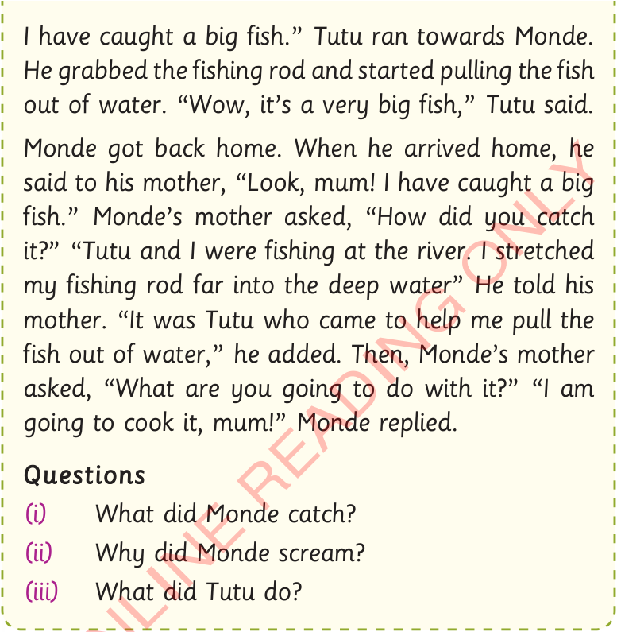

I have caught a big fish.” Tutu ran towards Monde. He grabbed the fishing rod and started pulling the fish out of water. “Wow, it’s a very big fish,” Tutu said.
Monde got back home. When he arrived home, he said to his mother, “Look, mum! I have caught a big fish.” Monde’s mother asked, “How did you catch it?” “Tutu and I were fishing at the river. I stretched my fishing rod far into the deep water” He told his mother. “It was Tutu who came to help me pull the fish out of water,” he added. Then, Monde’s mother asked, “What are you going to do with it?” “I am going to cook it, mum!” Monde replied.
Questions
- (i)What did Monde catch?
- (ii)Why did Monde scream?
- (iii)What did Tutu do?